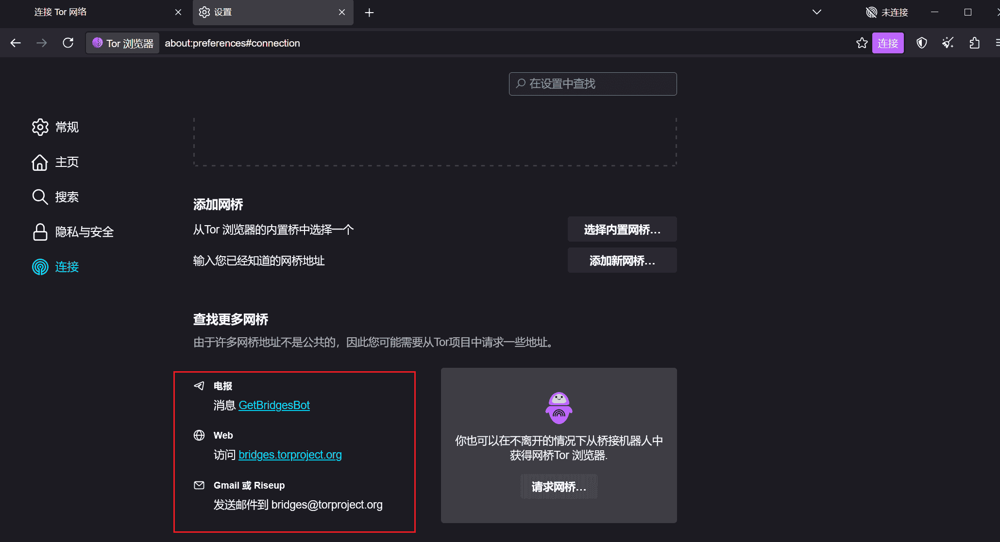

2024-11-11
2024-11-11  17:34
17:34什么是暗网
维基百科：暗网
暗网是一个相对概念。明网是使用常规方法能访问到的网络，暗网是使用非常规方法能访问到的网络。对于大陆用户来说，通过翻墙才可以访问到的网络也可以定义为暗网。暗网和明网不是包含与被包含的关系，是同等级的，都属于网络。
如何访问
本网站专注于知识分享，致力于为大家提供实用的学习资源和高质量的内容。所有内容均免费开放，旨在帮助大家拓展知识，提升技能。要合理使用工具哦。
第一步：打开tor官网
第二步：点击右上角的Download Tor Browser
第三步：安装tor
第四步：打开设置
第五步：选择方框中任一方法获取网桥

第六步：添加新网桥
完成以上步骤就可以使用tor网络了
第七步：如果想先通过本地代理的话，打开clash设置，查看clash运行端口
第八步：打开tor浏览器设置的连接，在下面进阶那里点击设置

第九步：代理类型选择HTTP/HTTPS，地址填本地环回地址127.0.0.1，端口填刚刚查看的端口号，然后点击确认就行
网站推荐
在暗网上不要泄露有关于你的任何信息，一点都不行。不要在暗网上使用你在明网上的账户登录网站。我推荐几个网站，其他的就留给你们自己去探索。
 电子邮件：https://account.protonmailrmez3lotccipshtkleegetolb73fuirgj7r4o4vfu7ozyd.onion/mailBestgore(画面很血腥,慎入！！)：https://bestgore.fun/videos/overviewTOR66搜索引擎：http://tor66sewebgixwhcqfnp5inzp5x5uohhdy3kvtnyfxc2e5mxiuh34iid.onion/Deep Search搜索引擎：http://search7tdrcvri22rieiwgi5g46qnwsesvnubqav2xakhezv4hjzkkad.onion/TORCH搜索引擎：http://xmh57jrknzkhv6y3ls3ubitzfqnkrwxhopf5aygthi7d6rplyvk3noyd.onion/cgi-bin/omega/omegaAhmia搜索引擎：http://juhanurmihxlp77nkq76byazcldy2hlmovfu2epvl5ankdibsot4csyd.onion/TorLinks：http://torlinksge6enmcyyuxjpjkoouw4oorgdgeo7ftnq3zodj7g2zxi3kyd.onion/隐藏维基：http://zqktlwiuavvvqqt4ybvgvi7tyo4hjl5xgfuvpdf6otjiycgwqbym2qad.onion/wiki/index.php/Main_Page暗网军团：http://darknet77vonbqeatfsnawm5jtnoci5z22mxay6cizmoucgmz52mwyad.onion/
电子邮件：https://account.protonmailrmez3lotccipshtkleegetolb73fuirgj7r4o4vfu7ozyd.onion/mailBestgore(画面很血腥,慎入！！)：https://bestgore.fun/videos/overviewTOR66搜索引擎：http://tor66sewebgixwhcqfnp5inzp5x5uohhdy3kvtnyfxc2e5mxiuh34iid.onion/Deep Search搜索引擎：http://search7tdrcvri22rieiwgi5g46qnwsesvnubqav2xakhezv4hjzkkad.onion/TORCH搜索引擎：http://xmh57jrknzkhv6y3ls3ubitzfqnkrwxhopf5aygthi7d6rplyvk3noyd.onion/cgi-bin/omega/omegaAhmia搜索引擎：http://juhanurmihxlp77nkq76byazcldy2hlmovfu2epvl5ankdibsot4csyd.onion/TorLinks：http://torlinksge6enmcyyuxjpjkoouw4oorgdgeo7ftnq3zodj7g2zxi3kyd.onion/隐藏维基：http://zqktlwiuavvvqqt4ybvgvi7tyo4hjl5xgfuvpdf6otjiycgwqbym2qad.onion/wiki/index.php/Main_Page暗网军团：http://darknet77vonbqeatfsnawm5jtnoci5z22mxay6cizmoucgmz52mwyad.onion/